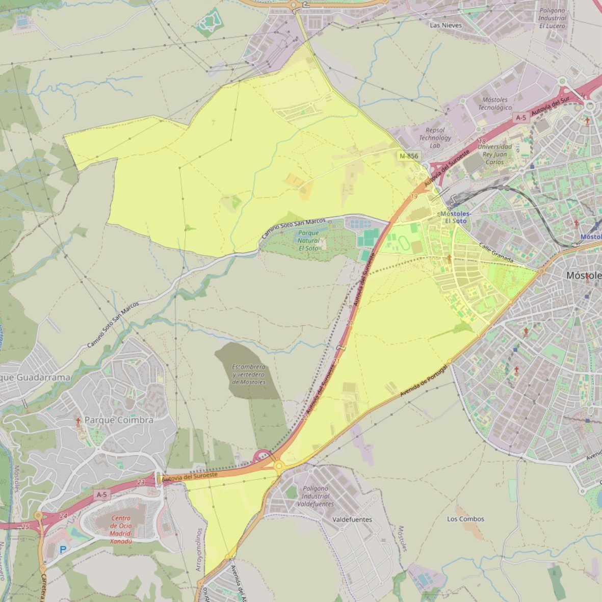

Nuestra Señora del Rosario y de la Esperanza

- Arciprestazgo
- Móstoles
- Población
- Móstoles
- Dirección postal
- Avda. Iker Casillas, 23
- Código postal
- 28935
- Extensión
- 9,47 km² (947 ha)
- Teléfono
- 916 093 701
- Correo electrónico
- elrosarioylaesperanza-mostoles@diocesisgetafe.es